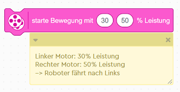

Nutze folgende Hilfestellung: - Fahre langsam vorwärts, je langsamer der Roboter fährt, desto einfacher ist es die schwarze Linie zu verfolgen. - Wenn der Roboter die schwarze Linie verliert, fahre rückwärts und drehe dich um 90 Grad nach rechts. - Wenn der Roboter die schwarze Linie wieder erkennt, fahre vorwärts und drehe dich um 90 Grad nach links. Verwende den folgenden Block für die Motorbewegung:
